Intro
In June of 2018 our team built a custom platform that made our client the 1st hyper-targeted, fully automated Google and Facebook ads provider for property management companies in the US.
Work Covered & Teams
MARCH 2019 - JULY 2019 - 8 SPRINTS
This project example covers one of the features from the 2nd major release in 2019: Google search ads.
Our team: Business Analyst, QA, Designer, Sr. Engineer, 2x Jr. Engineers, Sr. Architect.
Client team: Product Manager, Sr. Director of Performance Marketing, Digital Marketing Manager, 3x Digital Marketing Analysts.
Client Background
Enterprise advertising real estate company with over 40 years of being in business. They were leaders in market until 2015 and then moved from 1st in overall traffic to 3rd after competitors invested 100M in the martech space.
Challenges
With less time to deliver in the 2nd release, we need to make the design process more accessible to our internal team and the client’s team. Another design team is already working on the same feature for a different client.
Goals
Reduce the number of erros from failed search ads siginficantly.
Strategy
MARCH 18TH - 22ND, 2019
18
Gather materials for Android & iOS design standards.
Light feature and competitive analysis.
19
Create screen shot board of competitor apps.
20
Analyze UI/UX of screen shots for competitor features.
Organize composition of notes for competitor screen shots.
21
Study interaction design of competitor apps.
Analyze research materials for Android & iOS design standards.
22
High-level application context map and share with whole team.
Debreif
Our business analyst and I met with the marketing manager and his team during the 1st week of the sprint to go over the following: What do they want to achieve with this feature? How do they define the probelm we need to solve? How does this feature impact the broader operations of the business?
Problem
Users can define placeholders that reference infomation from a database. These references can be inserted in any fillable form of the platform. This is part of the form used to create their search ads:

These fields become the simplified URL in the Google search results (Google has since replaced the URL in search ads with key words to simplify the results).
The problem is path 1 and 2 have a limit of 15 characters, and the values in the database that replace “[Bedroom#]” and “[City]” often exceed the character limit, causing the ads to fail when posting.
Insights
We learned that the client fixes the failed ads by shortening all of the copy, then they try again. This reduces the quality of the ad in many cases, but gaurantees that it does not fail. This gave us important context that we needed to start outlining a solution.
Initial Concept
First, I wanted to capture the client’s concept of “multiple ad versions”, so at the end of the 1st week we reviewed an initial sketch I had done. They liked the general direction of the sketch, so from there we started asking more targeted questions: What are the limits of the form? How many versions do they need to make?
The BA and I spent the rest of the last day reviewing the other design team’s solution for the same feature. Our solution was much different and the other team was ready to start coding theirs. Our CTO had a heavy hand in the concept of the other team’s soution.
Research
MARCH 25TH - 28TH, 2019
25
Analyisis of similar design patterns including screenshots, annotations, and links to articles.
26
Outlined key findings.
Read through discussions on selected design patterns.
Met with developers to review design patterns, intial concepts, and sketches.
Met with the client to share how our research can inform the concept.
29
Began making updates to our sketches.
During the 2nd week I did an analysis of several design patterns. My goal was to examine relevant documentation on the patterns that I felt had good potential for the ad versions. These materials included articles from Nielsen Norman, UX Stack Exchange, and Codepen. I also consider any physiological limitations or preferences the client has. We knew that the client team had no preference for keyboard or mouse use when working in the platform however, they prefered simplicity over complexity, even if it costs more time to implement a more simple solution.
I shared the work from the previous week with our lead developer to let him provide feeback early in the process and familarize with the concept. I took notes and recorded the feedback. At the time I used Optimal Workshop to capture feedback.
We spent the rest of the week reviewing what we learned from our research, showcased our findings to the client, and discussed the changes that we needed to make to our sketches, and transfered ideas to a prototype.
Hypotheses
The form will work and the new functionality for creating versions could be built within it. Versions of each field can be used to maintain/manage the work more easily than creating a separate ad for each version of the ad.
Design & Testing
APRIL 1ST - 5TH, 2019
01
Analyisis of similar design patterns including screenshots, annotations, and links to articles.
02
Outlined key findings.
Read through discussions on selected design patterns.
Met with developers to review design patterns, intial concepts, and sketches.
Met with the client to share how our research can inform the concept.
05
Began making updates to our sketches.
Now that we have validated our inital concept with members of our internal team and the client’s team, we moved on to creating a prototype to capture the workflow in more detail.
Our BA informed me that Google will add 2 additional fields to the ad form and our client wants them to be included in the new ad form design. Our tiny form was already getting an upgrade, but it’s size relative to other components in the platform now had the potential to be very large. I created a mock-up of the new form with the 2 additional fields and added the number of versions the client expected to use for each field of the form. This gave us an idea of how the form scaled in size. After seeing it, I realized we needed a different approach.
I felt I had enough information from the client to move forward until I had something to present.
My instinct was to bring the form into a modal view, providing a space for the person using the feature to focus, and space for the design pattern to scale comfortably.
Prototyping
I introduced Figma to our team, a new design tool (at the time), to help us collaborate more effectively. I placed all of our sketches, prototypes, and designs into one document that could be shared with anyone on the team. This increased the visibility of the design team’s work and allowed our team to interact more easily with our design process overall.
I used the prototype to test with some of our team members who are familiar with our digital marketing products.
I asked each person to complete a specific task and verbalize their thought process. I observed them going through the prototype and recorded what I heard and saw during each session. I used Optimal Workshop to record feedback for testing sessions, specifically the Reframer tool testing too. With Reframer we can reference feedback and insights from testing and share it with my team members. I made updates to the design after analyzing the feedback.

I iterated versions of the prototype based on the new feedback from testing. I always tested with our developers, it was good way to get their feedback and start to think about the design from a technical perspective. The developers to us they even felt more confident when estimating stories.
I asked our developers if we could invoke a modal view for this feature. I broke the news in our next stand up and explained the need to move in another direction. I did an initial mock up of the new form for our whole team and the client in a meeting.
We maintained our original concept and explained the rationale for the modal view. Now, with a much larger area of screen real estate, we could lessen the stress of trying to fit a long form in our main interface.
Testing the scalability really paid off, helping to visualize that our small, unobstrusive form was now a candidate for a design pattern that could scale smoothly.
After clearing up our direction for the form’s UI we could move on to testing with prototypes. Our main goal was to bring down the number of failed ads caused by character limmit errors. To solve this, our dev team needed to loop through the text of each version of each field and check the final copy’s number of characters before creating the ad. The design team needed to create a way for our client’s team to visualize and manage their versoins in a simple and intuative way.
This is the final result after several testing sessions, 6 prototype iterations , and synthesis of information collected. A great insight from one tester resulted in the additional ability to show and hide the versions: “I just want to be able to see my ad.” — CTO